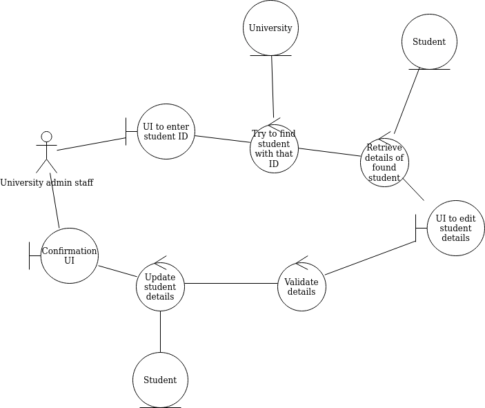
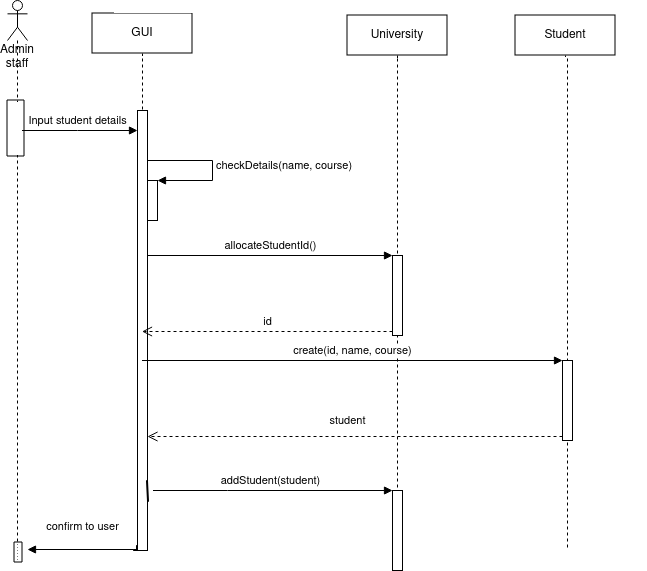
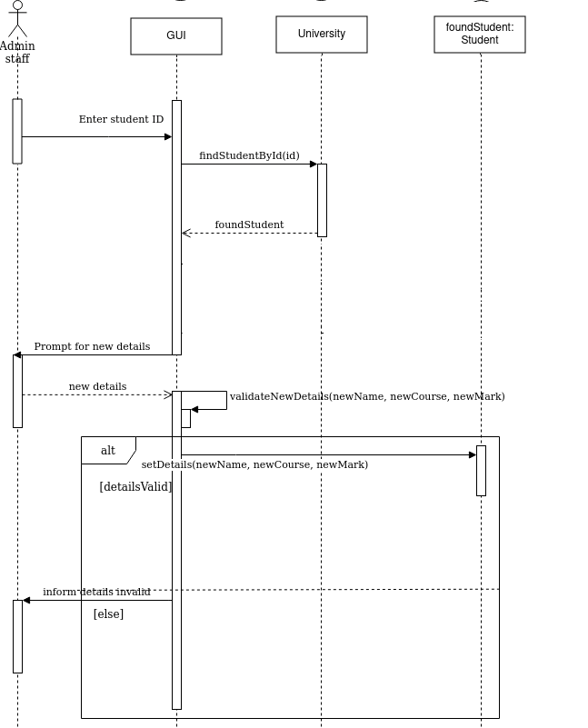

Topic 7: Analysis and Design II: Robustness and Sequence Diagrams
Robustness Diagrams
- What are robustness diagrams?
- Why are they used?
- Robustness diagram notation
Bridging the gap between the User and the Code
We have already seen that the domain model represents classes in the system, while use-cases analyse the application from a user interaction point
of view. However, we need to bridge the gap between these two aspects of the system, the user interaction, and the potential classes. Robustness diagrams allow us to do this by considering what classes from the domain model are needed for each step of each use-case. See Rosenberg and Stephens, "Use Case Driven Object Modeling with UML - Theory and Practice" (2013), p101-2
- Robustness diagrams are an alternative, graphical way to depict the use cases. They help you think about how the steps of the use case will interact with
the domain model classes.
- They also act as a "sanity check" on use cases - drawing out the use case in a graphical form can help us check that the original use case text was sensible (Rosenberg and Stephens, p104)
- They can aso enable you to discover new classes in the system (Rosenberg and Stephens, p106)
Robustness Diagram Notation
Robustness diagrams use three different symbols to represent different aspects of the system:

- Boundary Objects: Represent interaction between the user and
the system, e.g. GUI elements, web forms
- Entity Objects: Represent classes within the system, e.g.
University or Student
- Controllers: Represent system actions within the program
Robustness Diagram Rules
Robustness diagrams must follow certain interaction rules, described below:
- Boundary objects can only talk to controllers
- Entity objects can only talk to controllers
- Controllers can talk to boundary objects, entity objects and
other controllers
How to Create a Robustness Diagram
- Go through your use-case text one step at a time
- Whenever the actor interacts with the system, we need a boundary object (typically a GUI)
- Each system response step in the use-case text typically becomes a controller in the robustness diagram
- For each controller, you need to consider what entity objects might
be required to carry out that action
Example: Enrol student
We will now look at a robustness diagram for the "enrol student" use case. The use-case text is repeated below, from week 4.
| Step |
Actor action |
System response |
| 1 |
The use case begins when the admin staff selects to
enrol a new student. |
- |
| 2 |
- |
System prompts the user for the student details (name, address, date of
birth, course) |
| 3 |
The user enters the details specified in step 2. |
- |
| 4 |
- |
System checks validity of details, e.g. date of birth is sensible |
| 5 |
- |
System allocates student ID for new student |
| 6 |
- |
System enrols student in university |
| 7 |
- |
System confirms enrolment is successful |
The robustness diagram for Enrol student

The diagram is derived from the use-case text as follows:
- We start with the use-case text and work out which objects (boundary, entity and control) are needed at each stage
- The first three steps are just actor-UI interaction and need little consideration: we just show a link between the actor and the UI boundary object
- Check validity of details does not require interaction with any of the objects from the domain model (University, Student, Course) as it will be a simple
if statement to check that the student details are not blank, year of birth is sensible, etc.
- Allocate student ID is a control object; this will allocate a unique ID for the new student. To do this task, we need to know what IDs have already been allocated, so we need to talk to an object which contains all the existing students. This will be the University object. Therefore, this object needs to talk to the University entity object.
- Create Student requires creation of a new Student object. So we would need to talk to the Student entity object.
- Add student to University will need to add the new Student to the University object. This will change the state of the University, so we need to talk to the University entity object.
- We then just display a confirmation, so we talk to a boundary object representing the confirmation UI.
Example: Edit student details
Here is a second example, again the use-case text is repeated from week 4.
| Step |
Actor action |
System response |
| 1 |
The use case begins when the admin staff selects to
edit the student details |
- |
| 2 |
- |
System prompts the user for the student ID |
| 3 |
The member of staff enters the student ID. |
- |
| 4 |
- |
System searches for the student with that ID |
| 5 |
- |
System displays details of that student in editable text boxes |
| 6 |
The admin staff changes the details. |
- |
| 7 |
- |
System checks that the new details are valid (e.g. no blank strings) |
| 8 |
- |
System updates details of the student |
The Robustness Diagram

- Again, the first three steps are just actor-UI interaction and need little consideration: we just show a link between the actor and the UI boundary object
- Find the student by ID will need to use an object with a record of all the students. Only the University has this, so we will need to talk to the University object.
- Retrieve the details of the found student is the next control object. We need to display the student details on the UI, so we will need to talk to another boundary object, but we will also need to talk to the Student entity object so that we can retrieve the individual attributes of the student (name, course etc) via a series of getter methods.
- Allocate student ID is a control object; this will allocate a unique ID for the new student. To do this task, we need to know what IDs have already been allocated, so we need to talk to an object which contains all the existing students. This will be the University object. Therefore, this object needs to talk to the University entity object.
- We then validate the new student details; again this is can just be done via an if statement and does not need to involve any of the classes from the domain model.
- Finally we actually update the details: this will involve updating the details of the Student object, therefore we need to talk to the Student entity object.
Discovering new entity objects
- During the process of drawing up a robustness diagram, you may
discover new entity objects by performing the robustness analysis
- One example from the above use-cases (enrolling a student, and changing student details) could be a
StudentDetailsValidator class, in which we validate the student details within its own class; this might be necessary as it could be a relatively complex process (e.g. check the date of birth is valid, check the course exists, etc).
- Thus, one of the effects of robustness analysis is to increase the number
of objects in the domain model
- Updated robustness diagrams with the
StudentDetailsValidator are shown below, firstly enrol student:

- Next, edit student:
Sequence diagrams
Having linked the use-cases to the domain model classes with robustness diagrams, the next stage is to move to a more detailed design, in which we work out what methods might be in the system, which classes they belong to and what order each method should be called. The sequence diagram allows us to do this: sequence diagrams show all the components in the system and their interactions (in the form of method calls), focusing on the order (sequence) in which they are called. Once a sequence diagram is completed, the methods shown on it can be used to enhance or correct the class diagram, to produce a finalised, accurate class diagram from which coding can begin.
How to draw a sequence diagram
- We start with the robustness diagram. When we did the robustness diagram, we worked out what classes from the domain model are required for each step in the use case
- Each interaction between a control object in the
robustness diagram and a domain model object roughly translates to a
method call
- Because we worked out the classes needed for each step of the use case in
the robustness diagram, the robustness diagram makes the process much easier
- This should be done for alternative courses as well as the normal course
of events - though often, it may be trivial for alternative courses of
action
Notation
- Sequence diagrams show the interaction between actors and classes in the
system, in sequence (hence the name)
- Each component (actor, class) is shown as a vertical lifeline representing its time span
- We say that one class (class A) sends another class (class B) a
message
- The sequence diagram shows how control flows from one component to another ((e.g. actor to class, or class to another class). A vertical box on a given lifeline is known as an activation and represents a continuous flow of control in one component (equivalent to a method).
- In code, this translates to class A calling a method of class B
- A solid arrow on the line connecting the two classes shows the direction of
the ssage
- Sometimes one class sends itself a message (a self-call)
- Return values (return messages) are shown by a dotted line
Example 1 - Enrol student

- The first two things that need to be done are to check that details
entered in the GUI and to check that the date of birth was valid
- The GUI does not need to communicate with any other classes to
do this, so we have a "circular" arrow to show that the
GUI class is sending a message to itself - a self-call
- Each check can be done by a method of the GUI class,
checkDetails()
- At this point, control has transferred from the actor to the GUI, so all the following methods will be called from the GUI
- The GUI then needs to send a message to allocate a student ID.
- We worked out in the robustness diagram that University should be
responsible for allocating a student ID
- This means that the University class will need a method to allocate a student ID and return it
- So, in the sequence diagram, we send a message to the University class to allocate an ID. We name our new method
allocateStudentId()
- This method will return a student ID, so we show that as a return message (dotted line, going the other way)
- This method would be added to the class diagram, if it is not there already
- The GUI then needs to send a message to create a new Student object.
- We have seen from the robustness diagram that this is the responsibility of the Student class; we are calling its constructor.
- Again we return an object; this time the student object just created.
- Finally the GUI sends a message to add the student we have created to the system
- This will involve sending a message to the University object, as the University holds all Student objects. Again we worked this out with the robustness diagram.
- We name the method to do this
addStudent(), and again add it to the class diagram if it is not there already
Example 2 - Edit student details

- First the GUI communicates with the University retrieve a student
with a given ID
- The GUI needs to send a message to University, because
University is responsible for retrieving a member by ID (we would work
this out on the robustness diagram)
- Once we've retrieved the member, we then need to retrieve its details
to display on the GUI
- This is shown on the sequence diagram by the GUI sending a
getDetails() message to a specific Student, foundStudent. Here,
getDetails() is shorthand for a series of getter methods, to retrieve each individual detail (name, course, etc).
- Note how we use foundStudent: Student in
the sequence diagram, this is to show we are communicating with a
specific Student,identified by the variable foundStudent in the previous step
- We then send a message back to the actor to prompt them for the new details
- Once the new details are received, we need to update them within the foundStudent object. So the GUI sends a message to foundStudent to update the details, by calling a
setDetails() method.
Alternative courses of action on a sequence diagram
You can also show alternative courses of action on a sequence diagram. This sis done by means of a UML frame. This has a label (alt for alternative courses of action) together with two or more sections, each representing an alternative course of action, and separated by a dotted line. Each section is annotated with the condition which must hold true for that course of action to run. Here is an example:

Preparing a sequence diagram in diagrams.net
Please see this blog article for more detail on preparing a sequence diagram in diagrams.net.
Exercise
Below is a domain model and two use case texts for the live music venue scenario, introduced in week 4.
- Prepare a robustness diagram for "add an event".
- Prepare a sequence diagram for "add an event".
- Prepare a robustness diagram for "book an event".
- Prepare a sequence diagram for "book an event".
Domain model

Use-case text: Add an event (easy)
| Step |
Actor action |
System response |
| 1 |
The use case begins when an administrator selects to
add an event |
- |
| 2 |
- |
System prompts the administrator for the event details |
| 3 |
The administrator enters the event details |
- |
| 4 |
- |
System checks there is no event already on that date at that time |
| 5 |
- |
System creates event with the entered details |
| 6 |
- |
System adds the event to the venue. |
Use-case text: Book an event (harder)
| Step |
Actor action |
System response |
| 1 |
The use case begins when a customer selects to
book an event |
- |
| 2 |
- |
System prompts the customer for the event name |
| 3 |
The customer enters the event name. |
- |
| 4 |
- |
System searches for the event(s) with that name |
| 5 |
- |
System displays details of all matching events |
| 6 |
The customer chooses an event from the list. |
- |
| 7 |
- |
System checks the event is not fully booked |
| 8 |
- |
System books the event for the customer |